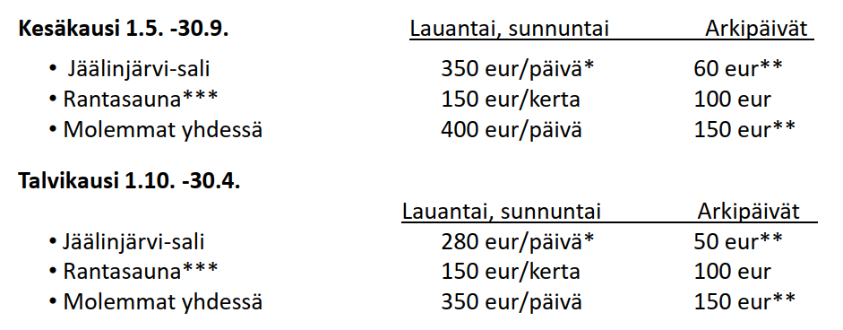

Jäälinmajan hinnasto 1.3.2026 alkaen
- *)
- Juhlatilan valmistelu mahdollista edellisenä iltana. Oltava siivottuna viimeistään klo 10 seuraavana päivänä.
- **)
- Tilaaja lämmittää. Omat pyyhkeet. Saunomisvalmiiksi lämmitettynä lisämaksu 50 euroa. Oltava siivottuna viimeistään klo 12 seuraavana päivänä. Huom. saunan lämmitys 70 asteeseen kestää talvella n. 2h.
Tilojen siivousmaksu 100 euroa, mikäli siivous tilataan varauksen yhteydessä tai jätetään hoitamatta sovitun vastaisesti.
Siirry varaamaan!Yhteystiedot:
- Birger Ylisaukko-oja
- p: 045 204 1003
- sp.: birger.ylisaukko-oja@outlook.com
Näyttö:
- Jaana Kauppinen
- p: 040 7003 807
- sp.: jaanamariakauppinen@gmail.com